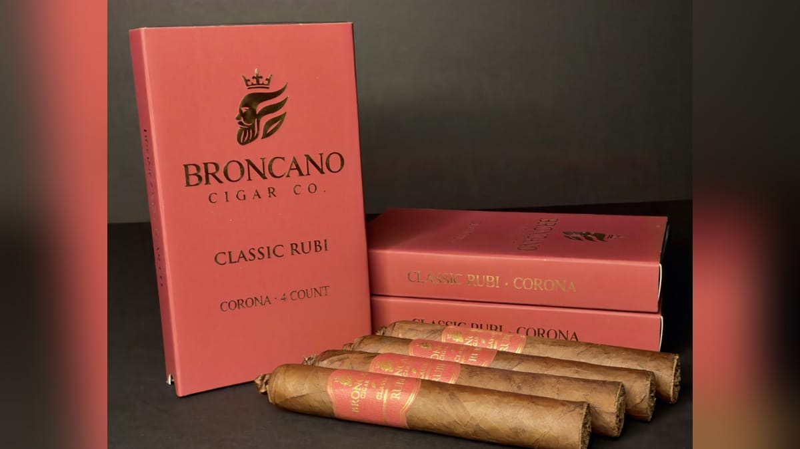
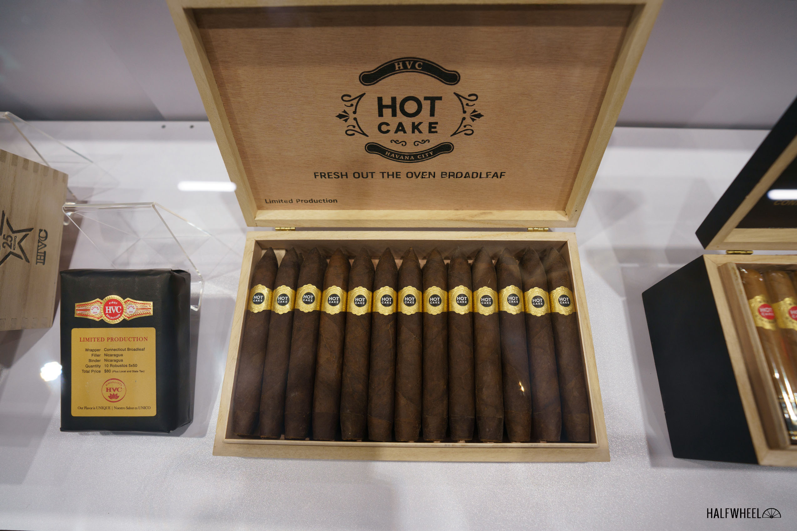

ドリュー・エステート、人気の「フライング・ピッグ」が10ブレンド集合 ― 初のボックスプレス版も
人気型「フライング・ピッグ」を10種のブレンドで揃えた限定サンプラー「フェラル・フライング・ピッグ・コレクション」が登場（10本入り170ドル／約26,900円、10月19日発売）。別売りでは史上初とみられるボックスプレス版のフライング・ピッグも発売された。
記事全文を読む ›WORLD CIGAR NEWS & INTELLIGENCE
BEYOND HAVANA. BEYOND BORDERS.世界の葉巻を、もっと広く、もっと深く。
人気型「フライング・ピッグ」を10種のブレンドで揃えた限定サンプラー「フェラル・フライング・ピッグ・コレクション」が登場（10本入り170ドル／約26,900円、10月19日発売）。別売りでは史上初とみられるボックスプレス版のフライング・ピッグも発売された。
記事全文を読む ›
5ブランドの葉巻をアルミチューブに1本ずつ収めた5本セット。バンデローロとネルソンの新サイズが入り、164ドル（約26,000円）。11月中旬から出荷開始予定。
記事全文を読む ›
JREタバコが85アニベルサリオ・レセルバに7×38のランセロを追加。ホンジュラス産ピナレーニョ種のみのブレンドで、1本22ドル（約3,490円）。
記事全文を読む ›
ブティックブランドのブロンカーノが、看板ブレンド「クラシック・ルビ」に新サイズのコロナ（5×46、ピッグテール・キャップ）を追加しました。ドミニカ共和国のケルナー・ブティック・ファクトリー製で、出荷はすでに始まっています。
記事全文を読む ›
タトゥアヘが、数年間レギュラーから外れていた「ラ・リケサ」を限定版「ラ・リケサ SE 2026」として復活させ、出荷を始めました。まずはカリフォルニア州中心のごく一部の小売店への「ソフト・オープン」で、全国展開の時期は未定です。
記事全文を読む ›
2020年登場のフエンテのラインを改めて紹介。全サイズがパーフェクト型で、エクアドル産ラッパーにドミニカとニカラグアの葉をブレンド。1箱ごとに13ドルが乳がん研究へ寄付される。
記事全文を読む ›
CLEの4代目サンティ・エイロアが手がける新ライン。1916年に曾祖父がキューバで植えたタバコに由来し、5年熟成ハバノ葉とピナレーニョを使う全ホンジュラス・ブレンド。
記事全文を読む ›
HVCの人気ライン「ホットケーキ」の限定シリーズ「フレッシュ・アウト・オブ・ジ・オーブン」第8弾「ブロードリーフ グラディエイターズ」が10月30日に出荷を始めました。6½×56のパーフェクト（ボックスプレス）で、500箱（25本入り）限定です。
記事全文を読む ›STGは刻みたばこの「BREAK」と「Moro」を日本たばこ（JT）へ売却する手続きを完了した。取引額は13億デンマーククローネで、葉巻とパイプたばこへの事業集中が進む。
創設メンバーとして34年間加盟してきたドミニカの業界団体プロシガーを、ダビドフが脱退。130市場における世界的な優先事項と規制課題への資源集中が理由とされる。
2005年に始まったハバノス地域限定のうち、スイス向け『エクスクルーシボ・スイサ』の歩みをたどる。初年度のパンチとラモン・アローネスから、2013年の記念ヒュミドール、最新作まで。
オッティンガー・ダビドフの2025年度売上高は5億4,530万スイスフラン（実質2.5％増）。創業150周年を増収で締め、生産拠点と直営店網への投資を続けている。
欧州議会はたばこ税制指令の改正案を本会議で否決した。葉巻・シガリロの最低税率を大幅に引き上げる案は宙づりとなり、審議は理事会側の調整に委ねられた。
 第4弾
第4弾
キューバから亡命した名トルセドール、ドン・ペピン・ガルシア。ニカラグアのエステリで息子と築いた一家は、専門誌の年間最優秀を3度受けた『キューバの伝統をニカラグアで進化させた名門』へ。その軌跡をたどります。
 第3弾
第3弾
1968年創業、ニカラグア最古のプレミアムブランド。革命と内戦、国有化を越えて愛され続ける「安くて美味い」の系譜を、創業家と工場の素顔とともにたどります。
 第2弾
第2弾
資本金600ドルから「非キューバの王道」へ。宣伝広告を打たず、コラボレーションも60年でただ1度。それでも専門誌の年間最優秀をどの会社よりも多く受けた一族の歴史と、偽物との戦い。
 第1弾
第1弾
フエンテ家の至宝「Fuente Fuente Opus X」。正規店への割当制で流通量が絞られる限定ライン（Lost City／Angel's Share／Forbidden X／Heaven and Earth）の実像を追う、シリーズ開幕の第1弾。